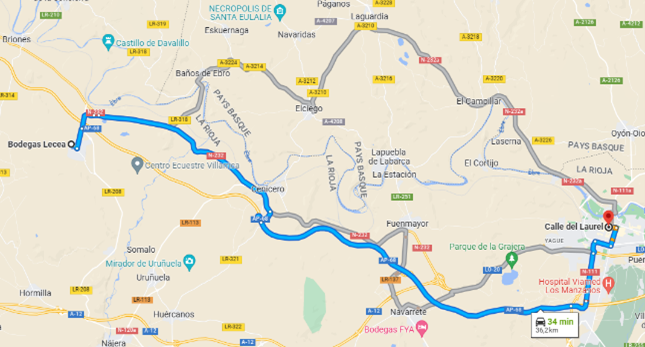
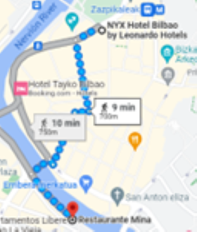

7h00 Petit-déjeuner accompagné de jambon Bellota et de pain frais.
8h15 Départ pour le Rioja (1h30 de route)
9h50 Visite d'une bodega traditionnelle de la Rioja à 10h en anglais

Bodega Lecea (San Ascensio)
La Bodega Lecea est une cave du 16ème siècle située dans une grotte creusée dans la roche il y a plus de 500 ans, avec un historique très fort autour des vins de la Rioja. Elle a conservé 4 caves troglodytes communicantes en activité où elle continue de fabriquer du vin à l'ancienne, dans des cuves en béton. Datant du XVIème siècle, vous découvrirez un savoir-faire ancestral et comment les vendanges sont une véritable fête du village (la fiesta del pisado de la uva) !
Visite guidée de 1h15 avec dégustation de 3 vins durant la visite - 18€/personne
(La température dans nos grottes est de 13º, une veste est nécessaire même en été.)
11h15 Départ pour Logrono (30' de route)

12h Logrono, la capitale de la Rioja
Calle Laurel, une rue formidable, une concentration incroyable de bars à tapas (plus de 60), chacun mettant en avant sa spécialité. On mange dans la rue, sur le comptoir. Il y a du monde, de l'ambiance, on apprécie, on se régale dans la bonne humeur… Un supert moment au milieu d'une population variée et locale.
Le conseil : Il faut goûter les patatas à la riojana à la Taberna del Laurel, calle Laurel,7, et le pulpo à la gallega à La Universidad, traversia del Laurel, 9…
15h30 Retour à Bilbao (1h45 de route)
17h00 Tiendastherapy
18h30 Sieste et se préparer pour le soir
21h Restaurante Mina
Muelle Marzana, 21h15 tappante
